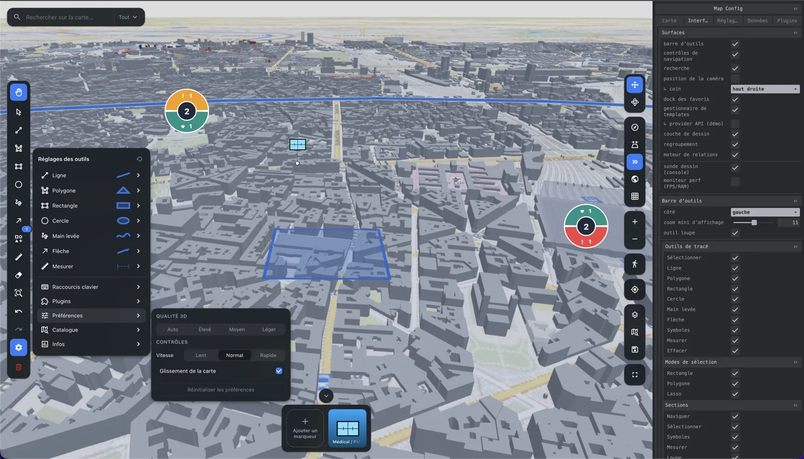
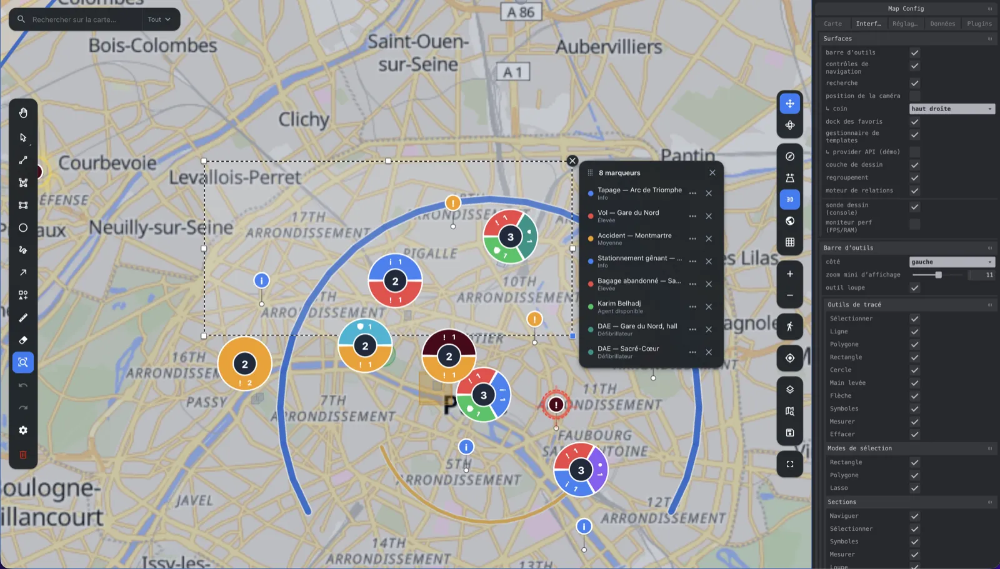
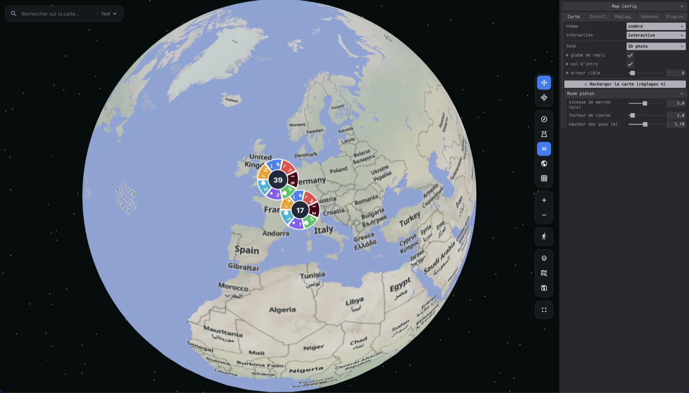
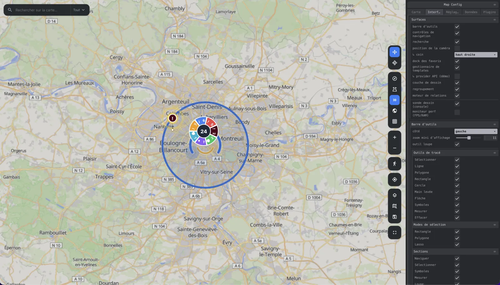
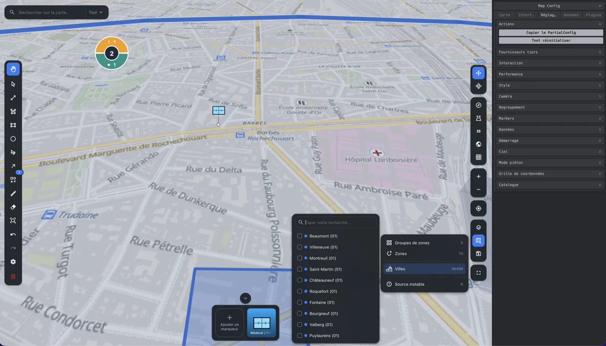
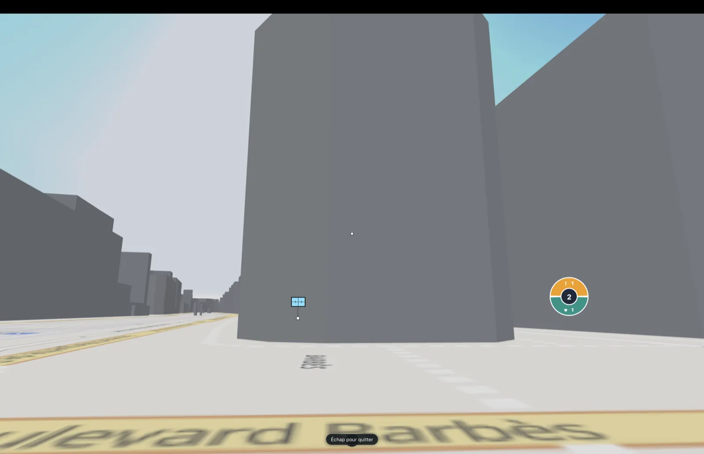

Paris Google Photorealistic 3D Tiles 48.8584° N · 2.2945° E
React 19 · three.js ≥ 0.160 · ESM + CJS + types
Real-time 3D
cartography
for React
Cartographie 3D temps réel pour React.
An imperative Three.js engine that React mounts and then stays out of.
MapEngine owns the camera, the tiles and the layers, so the frame loop never waits on a
re-render.
npm i @pasquelin/map3d three react react-dom
- Version
- {{VERSION}}
- Peers
- react 19 · three ≥ 0.160
- Build
- ESM + CJS + .d.ts
- Licence
- PolyForm Noncommercial
Live demos
Run it in the browser
No install, no key. The demos below are built from this repository on every push and served straight from GitHub Pages.

react Operator dashboard A 3D map with severity-clustered alerts refetched on move, animated agents with camera follow, zones, the full drawing editor, a light/dark toggle and an alternative neon theme. Published without a Cesium Ion token, so photorealistic 3D tiles are off and the map falls back to the self-hosted basemap. Everything else runs. Clone the repository and setVITE_CESIUM_ION_TOKEN to see the photorealistic globe.
Open the demo
Gallery
From orbit to the pavement
One library covers the whole descent — orbital globe, regional clustering, street-level detail, first person on the ground.
-

12 700 km Globe to flat map ellipsoid fallback, smart clustering
-

40 km Markers and clusters pooled DOM nodes, stable identity
-

900 m Catalog, search, symbols MIL-STD-2525D
-

1,7 m Pedestrian mode first-person immersion
Capabilities
What ships in the box
Every surface — toolbar, controls, search, coordinate grid, clustering — is mounted inside
<Map> and driven by configuration. You add the data.
-
Photorealistic 3D, flat 2D
cesiumIonTokenGoogle Photorealistic 3D Tiles through Cesium Ion, an ellipsoid globe when no token is set, and a 2D basemap that runs from Google or your own XYZ server. -
DOM markers and clusters
markersLayer()Real DOM nodes with native hover, focus and CSS animation. Pooled and written in a singletranslate3dpass; a moving agent glides instead of being recreated. -
Drawing editor
drawMarquee and lasso selection, resize and rotate handles, per-tool styles, undo/redo, GeoJSON in and out. -
Viewport-driven live data
useLiveData()Bounding-box refetch as the camera moves, plus real-time updates. -
MIL-STD-2525D symbology
dynamic importThe 9 MB symbology SDK is loaded on demand — it never enters a bundle that shows no symbols. -
Typed theme and labels
theme · labelsLight and dark,prefers-reduced-motionhonoured, fully translatable. No hard-coded string or value anywhere.
Quick start
A clustered map in a dozen lines
import { Map, markersLayer, type MarkerData } from '@pasquelin/map3d'
type Alert = { title: string }
const alerts: MarkerData<Alert>[] = [
{ id: 1, type: 'critical', position: { lat: 48.8566, lng: 2.3522 }, title: 'Intrusion', data: { title: 'Intrusion' } },
{ id: 2, type: 'info', position: { lat: 48.8606, lng: 2.3376 }, title: 'Patrol', data: { title: 'Patrol' } },
]
export function App() {
return (
<div style={{ height: '100vh' }}>
<Map
center={{ lat: 48.8566, lng: 2.3522 }}
zoom={13}
layers={[markersLayer<Alert>({ points: alerts, cluster: { enabled: true } })]}
/>
</div>
)
}Optional plugins — IGN Géoplateforme, Windy, indoor floor plans — live in a separate repository, and you can write your own with the plugin API.